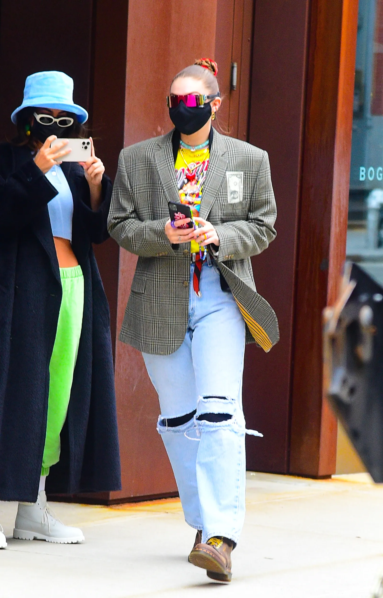

Anne Hathaway’s Couture-Filled Instagram Posts Are the Glamour We Need Right Now
If your 2021 lacks glamour, head over to Anne Hathaway’s Instagram. The actress’s latest film, Locked Down, hits HBO Max today, and, in lieu of a premiere or whirlwind international press tour, Hathaway has been serving looks on social media. In the past 24 hours, the star has shared three dazzling metallic gowns, and there’s no telling what she might post next
Next up, a liquid metal corseted creation by Vivienne Westwood. A throwback to Westwood’s spring/summer 2012 collection, the sultry piece has become a favorite of celebrities thanks to its body-conscious silhouette that accentuates hourglass proportions. The dress’s plunging neckline and daring hemline would command attention on their own, but paired with diamond drop earrings and plenty of blingy rings, the look was impossible to ignore
Hathway kicked things off with a gold number from Azzaro. The long-sleeved piece was a standout when it first appeared on the runway back in January of last year. But Hathaway and stylist Erin Walsh took things up a notch, complimenting the layers of lamé with oversized earrings and a deep burgundy lip. The striking effect was heightened by a dramatic pose that showed off the gilded pleats as Hathaway twirled.
Takes a Page From Bella’s Closet With This Jacket!
Today, Gigi Hadid was spotted out in New York City in a head-turning look. The model posed by a truck to promote Zayn’s newest album Nobody Is Listening. The new mom opted for a graphic yellow T-shirt plastered with the cartoons, a pair of high-waisted faded jeans with tears at the knees, and sturdy brown hiking boots. Another bright touch for a pop of contrast? A thin red and blue striped belt.
Though, there was something that gave us sartorial déjà vu and seemed to take a page from her sister Bella Hadid’s style playbook. She wore a checked, oversized blazer that had a dollar bill stitched onto the pocket by the label 3.Paradis. Her sister Bella has sported a dark blue incarnation of the jacket in the past, wearing the piece with a pair of midriff floss pants back in March. Let’s keep an eye out for what looks the two trade next.